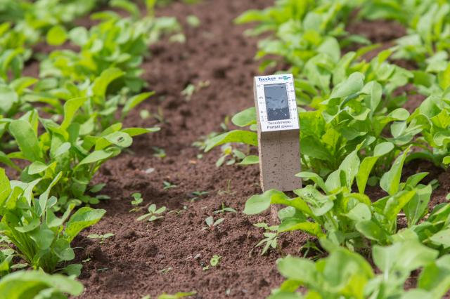

O feijão é um dos principais alimentos consumidos no Brasil, fazendo parte da base alimentar do país. Ele é uma das culturas mais tradicionais, cultivada em praticamente todas as regiões brasileiras.
O cultivo de feijão no Brasil é distribuído por diversas regiões, sendo o Nordeste, Centro-Oeste e Sudeste os principais produtores. A variedade mais plantada é o feijão carioca, mas também são comuns o feijão preto, feijão-de-corda, entre outros.
Plantação de feijão no Brasil.
O ciclo do feijão é relativamente curto, o que permite várias safras ao longo do ano. Assim como outras culturas, o uso de tecnologias na agricultura de precisão tem melhorado a eficiência da produção e a qualidade das safras de feijão.
Equipamentos de Precisão no Manejo do Feijão
A agricultura de precisão tem sido amplamente adotada no cultivo de feijão. O uso de equipamentos avançados ajuda a maximizar a produtividade, reduzir custos e otimizar o uso de insumos.
GPS Agrícola
O GPS agrícola é essencial no mapeamento das áreas de cultivo. Ele permite que as máquinas trabalhem com precisão, evitando desperdício de sementes e insumos. Além disso, facilita a colheita e a irrigação.
Uso de GPS em máquinas agrícolas.
Sensores de Solo
Sensores de solo são usados para medir a umidade e a qualidade do solo em tempo real. Eles ajudam os agricultores a tomar decisões rápidas sobre a irrigação e a adubação, maximizando o rendimento.

Sensores de solo usados no manejo do feijão.
Máquinas com Taxa Variável
Máquinas com taxa variável ajustam automaticamente a quantidade de sementes e fertilizantes que são aplicados na lavoura. Essa tecnologia garante que cada parte do campo receba a quantidade exata de insumos necessária.
Máquinas agrícolas com taxa variável.
Drones
Drones são usados para monitorar o desenvolvimento das lavouras de feijão, identificar pragas e doenças e ajudar na aplicação localizada de defensivos agrícolas.
Drone utilizado no monitoramento da plantação de feijão.